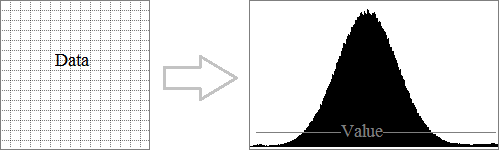
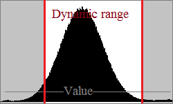
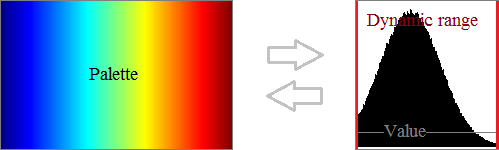
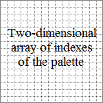

Unit: DeLaFitsGraphics
Type: class
Inherited from: TFitsFrame
Description:
Building a graphic image of the data. The graphic image of the data it is 8-bit image. Each data pixel is associated with one of the 256 color of palette. The class creates a graphic image of the data in the form of a two-dimensional array of indexes of the palette. Such an array is easy to convert into a known graphic format, for example, BMP .
.
The property GraphicRgn defines full region of graphic image of the data.
The principle of creating a graphic image of data and a picture in DeLaFits:
1. Analysis of the data of the frame: building a histogram

↓
2. Analysis of the histogram: the selection of the dynamic range

↓
3. Analysis of user parameters. Color correction: value of dynamic range, palette, brightness, contrast, gamma,
see TGraphicColor
↓
4. Creating a Band: the definition of the relationship between the colors a palette and the physical values of data

↓
5. Analysis of user parameters. Affine transformation: shift, rotation, scale, shear,
see TGraphicGeom
↓
6. Creating a graphic image of data: the two-dimensional array of indexes of the palette,

↓
7. Creating a Picture: convert the two-dimensional array of indexes of the palette into a known graphic format,
see TFitsBitmap
Protected methods
Init override |
Initializes the fields of the class |
Constructor & Destructor
destructor Destroy; override |
Destroys an object and all related objects, except stream! |
Public methods
Preparing the graphic image of the data: memory allocation for two-dimensional array of indexes of the palette |
|
GraphicRead virtual |
Creating the graphic image of the data: two-dimensional array of indexes of the palette |
Public property
GraphicColor reference |
Color correction |
GraphicGeom reference |
Affine transformation |
GraphicRgn readonly |
Specifies the coordinate and the size of the region of graphic image of data |
See Also:
—
Created with the Personal Edition of HelpNDoc: Free PDF documentation generator
Copyright © 2013-2016, Evgeniy Dikov
Support: delafits.library@gmail.com
Sources: https://github.com/felleroff/delafits